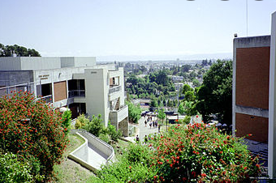

Hello, my name is Sam Shelby and I am a freshman at Piedmont High School. I have lived in Piedmont my entire life, and my dad grew up here aswell. My family has beem going through the peidmont education system for almost 75 years.
Sam Shelby was born in Berkley, California in October of 2006. He has lived in Piedmont CA for his entire life, with his mom, his dad, and his older brother. Sam Shelby currently plays 2 sports, soccer and football, attends piedmont highschool, and is enjoying life. Sam is old for his grade, and is looking forward to his future years at Piedmont high. Sam's favorite things to do in his free time are play soccer and football, along with spending time with friends and family. Sams is very close to his friends, and loves to spend time with them. It's easily his favorite thing to do. His favorite foods are steak, pasta, and shrimp dumplings. Sam is very open to new things, and has a hard time not seeing the good side of things. Sam is very interested in the body and how it works, especially during physical activity. Sam chose this I-Search topic because it is incredibly interesting to him and he will benefit as an athlete from this research.
